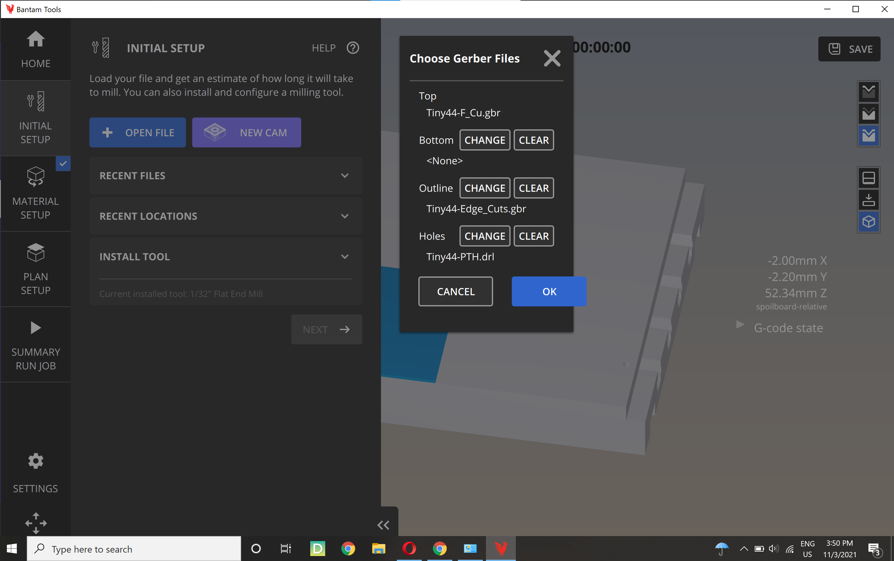
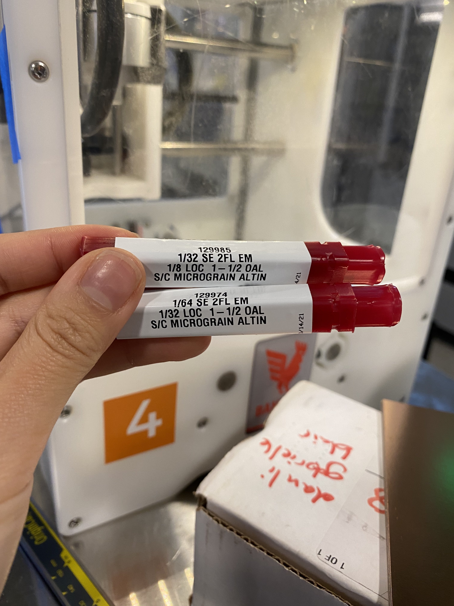
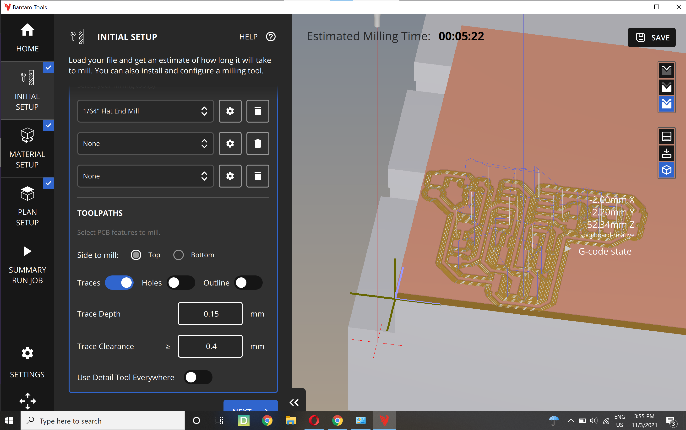
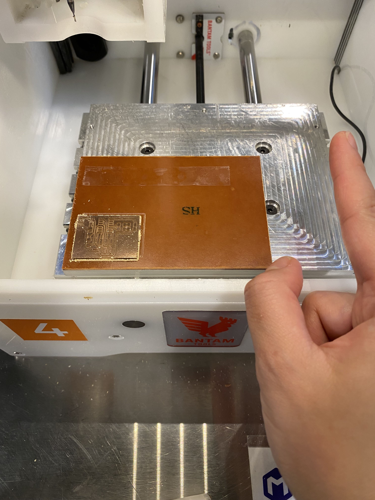

This week we are taking a break from creative flow of design and fabrication. With some lessons learned, this assignment will document the use of the Bantam Tools desktop PCB milling machine.
Setup
The machine is easy to use - turn it on, mill, and shut it down.
The files were kindly prepared and tested by our instructor. For making the circuit board, three files are needed for the holes, the traces, and the outline.

The endmill used for holes and outline has 1/32 in diameter and the one for traces has 1/64 in diameter.

The board is taped down onto another sacrificial board. Thickness of both board with tape on is measured. The board thickness will be the input for trace depth and the sacrificial thickness will be the input for z offset. The Bantam Tools interface has a cute graphics of it that is easy to understand. I decided to choose a trace clearance that will leave large enough space between traces yet wide enough traces for easy soldering later.

Milling it
The first pass has only the trace, using 1/64 endmill. The second pass has both holes and outline using 1/32 endmill.
The machine setup follows roughly this order: home –> load material (board) –> install/change tool –> zero z-height of tool –> start milling. The interface instruct the user of what to do next. It is a friendly interface. It also animates the whole process like an othertwin of the machine.

Vacuum when one job is finished. Use load material to retrieve the board but do not eagerly put your fingers inside of the machine!

My first milled PCB! The depth of the trace cut is deeper than the set value by about 0.2 mm, which is probably the combined error of thickness measurements.

Looking forward to the soldering that comes next.